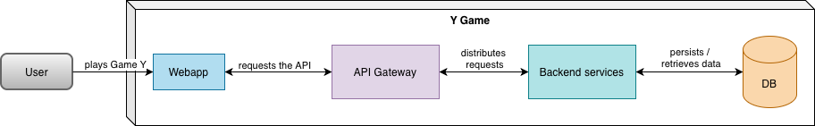
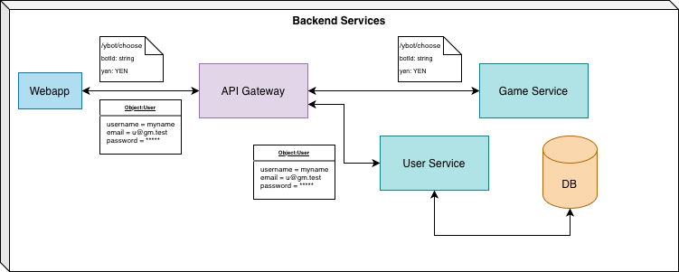
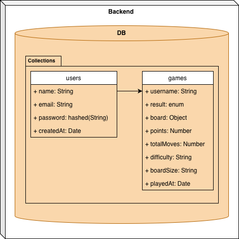
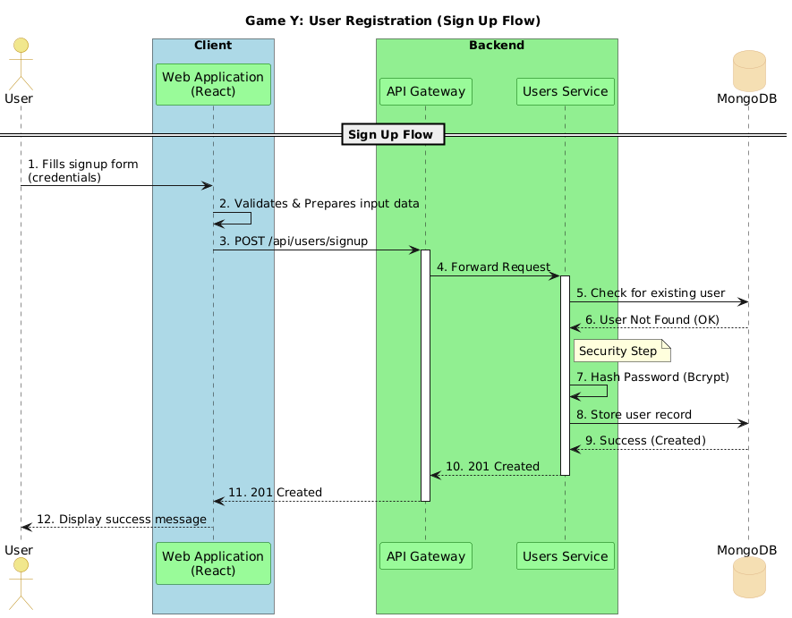
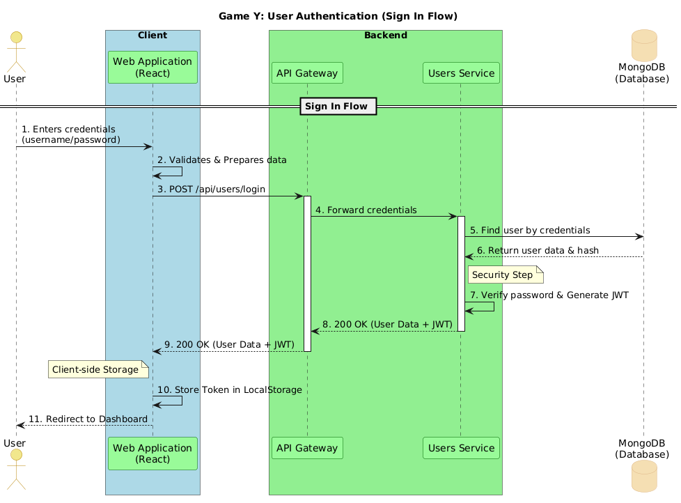
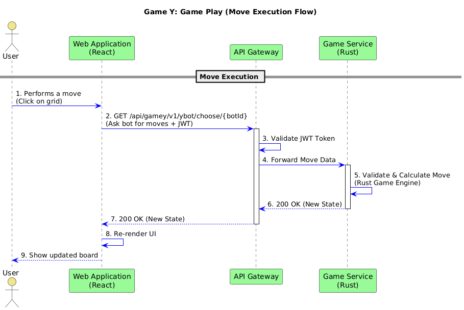
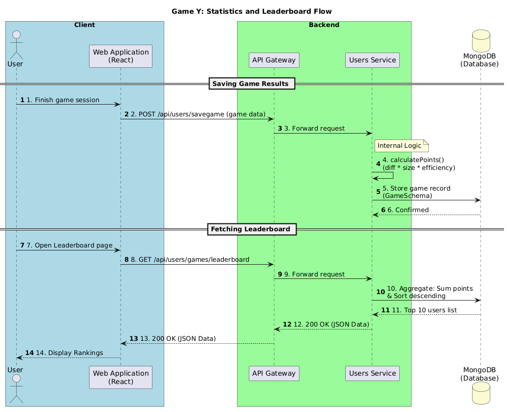
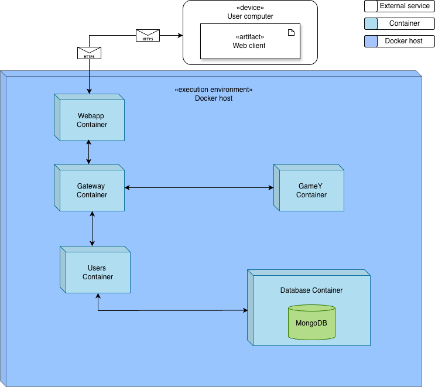
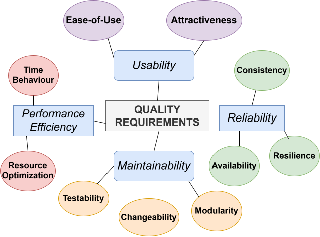

1. Introduction and Goals
1.1. Functional requirements
-
Publicly accessible application via web which allows users to play matches of Game Y.
-
To offer a possibility to play against the machine.
-
Ability for users to register in the system.
-
Game history for registers users that includes at least the number of matches played, win/loss statistics and other relevant metrics.
-
API through which user info and game data can be managed.
-
Game state should follow YEN notation using JSON messages
1.2. Quality Goals
The top three (max five) quality goals for the architecture whose fulfillment is of highest importance to the major stakeholders. We really mean quality goals for the architecture. Don’t confuse them with project goals. They are not necessarily identical.
Consider this overview of potential topics (based upon the ISO 25010 standard):

You should know the quality goals of your most important stakeholders, since they will influence fundamental architectural decisions. Make sure to be very concrete about these qualities, avoid buzzwords. If you as an architect do not know how the quality of your work will be judged…
| Quality Goal | Description |
|---|---|
Usability |
Intuitive user interface to boost use experience. Logical move suggestions by the bot. |
Performance efficiency |
Game should process moves with minimal response time. |
Maintainability |
Organized and easy-to-read code to facilitate easier modifications and updates in the future. |
Availability |
Having the servers be up with only minimal downtime. |
1.3. Stakeholders
| Role/Name | Expectations |
|---|---|
Micrati |
Top notch user experience to boost engagement with the product. To have the servers up and running as much as possible. |
End Users |
Intuitive and well performing game platform. |
Course professors |
Easy to read documentation which highlights key decisions and how work has been divided. |
Development team |
To create a game which satisfies other stakeholders' expectations. |
2. Architecture Constraints
2.1. Technical Constraints
| Constraint ID | Constraint | Impact | Rationale |
|---|---|---|---|
TC-01 |
Microservices Architecture |
System must be deployed as three independent containerized services (Webapp, Users Service, GameY) |
University ASW labs require practice with distributed system architecture and Docker-based deployments |
TC-02 |
Docker Containerization |
All services must be containerized and orchestrated via Docker Compose |
Standardized deployment environment across development, testing, and production |
TC-03 |
Git Repository Structure |
All code must be maintained in a single monorepo with multi-component structure |
Facilitates coordinated development across multiple teams and services |
TC-04 |
Use of Arc42 as documentation standard |
All the documentation must be completed using the standard of the Arc42 documentation template |
Creates more unified project making it easier to understand by people not belonoging to the team |
2.2. Organizational Constraints
| Constraint ID | Constraint | Impact | Rationale |
|---|---|---|---|
OC-01 |
GitHub Repository |
Code must be hosted on GitHub under Arquisoft organization (arquisoft/yovi_0) |
Version control, CI/CD integration, and artifact publication requirements |
OC-02 |
SonarCloud Quality Gates |
Code must pass SonarCloud quality analysis and coverage thresholds |
Quality assurance and maintainability requirements |
OC-03 |
Release and Deployment Automation |
Automated CI/CD pipelines must build, test, and deploy on every release |
Ensures consistency and reduces manual deployment errors |
2.3. Conventions and Naming Guidelines
| Convention | Rules | Example |
|---|---|---|
Project Structure |
Each service in separate directory; services are independently deployable |
|
Package Naming |
Services follow npm/Cargo naming conventions; lowercase with hyphens where appropriate |
|
API Endpoints |
REST endpoints follow RESTful conventions; resource-based paths |
|
Configuration |
Environment-specific settings via environment variables and |
|
Documentation |
Arc42 template in AsciiDoc format; architecture documentation in |
|
Testing |
Unit tests co-located with source code; test files suffixed with |
|
Code Quality |
TypeScript strict mode; ESLint configuration; Rust clippy lints |
All code must pass linting before CI/CD acceptance |
3. Context and Scope
3.1. Business Context
| Communication Partner | Inputs | Outputs |
|---|---|---|
End User (Browser) |
User registration data (name, credentials) |
HTML/CSS/JavaScript web interface, game board rendering |
Game Player |
Game moves, game commands (create game, choose piece, etc.) |
Game state, board updates, move validation responses |
External Bots/AI Players |
Game state queries, available moves requests |
Bot moves, strategic decisions |
System Administrators |
Configuration parameters, monitoring queries |
System health status, performance metrics, logs |
Domain Interfaces Explanation:
-
User Management Interface: Users interact with the system through the web application to create accounts and manage their profiles.
-
Game Interface: The core business logic revolves around game creation, move validation, and game state management (pieces, coordinates, players).
-
Bot Interface: The system supports bot players that communicate with the game engine to perform moves and participate in games.
-
Monitoring Interface: System health and performance data is exposed for operational monitoring.
3.2. Technical Context
| Component | Protocol | Port | Technology | Purpose |
|---|---|---|---|---|
Webapp (Frontend) |
HTTP/HTTPS |
80, 443 |
React, TypeScript, Vite |
Web user interface |
API Gateway Service |
HTTP |
8000 |
Node.js, Express |
Entry point to the rest of the services. |
Users Service |
HTTP/REST |
3000 |
Node.js, Express |
User management and registration |
GameY Engine |
HTTP/REST, WebSocket |
4000 |
Rust, Axum |
Game logic and bot registry |
Monitoring (Prometheus) |
HTTP |
9090 |
Prometheus |
Metrics collection |
Monitoring (Grafana) |
HTTP |
9091 |
Grafana |
Metrics visualization |
Technical Interfaces:
The system uses standard web protocols for communication:
-
HTTP/REST API: Primary interface for synchronous communication between services and browser clients
-
WebSocket: Real-time bidirectional communication for game interactions
-
JSON: Data format for all API requests and responses
-
Prometheus Metrics: Time-series metrics collection for system observability
Mapping of Business I/O to Channels:
-
User registration data → HTTP POST /createuser endpoint (Users Service)
-
Game moves and state → HTTP REST or WebSocket (GameY Engine)
-
System metrics → Prometheus endpoints on each service
-
Monitoring dashboards → Grafana HTTP interface
4. Solution Strategy
4.1. Technological decisions
Here are the key decisions related to the technological aspects of our project. Reasons behind these decisions are described briefly for each solution.
| Name | Motivation |
|---|---|
Rust |
An in-demand programming language in the industry and renowned for its performance.Our professors have set this as a so-called constraint. |
TypeScript |
Better performance and error catching capabilities than its subset JavaScript. Works seamlessly with HTML and CSS. |
MongoDB |
Flexible data storage model fits our project than its relational counterparts. |
React |
Widely used JavaScript framework facilitates user-friendly components for the front-end. |
Vite |
Complements React UI library. Modern industry standard for React projects. |
Express |
Facilitates easy HTTP req/res cycle for the back end of the user creation page. |
Docker |
We can encapsulate different components of our software application into Docker containers which can be hosted on Azure. |
Azure |
Offers an on-demand computing environment over the cloud for our virtual machine that is highly scalable. |
Github |
Easier code management via Git version control. Automatic code deployment to the virtual machine via GitHub Actions. |
4.2. Achieving key quality goals
| Quality goal | How we achieve it |
|---|---|
Maintainability |
Well-structured code and clear documentation to support future changes. |
Usability |
Intuitive UI with React; Rust for efficient, reliable behavior. |
Availability |
Multiple server instances for redundancy and reduced single points of failure. |
5. Building Block View
5.1. Level 1: White Box of the Overall System
The building block view shows the static decomposition of the system into building blocks and their dependencies.
Motivation: Decomposing the system into separate components (Frontend, Backend, and Database) allows us to handle user interface, game logic, and data persistence independently, using the best technology for each (React, Rust/Node.js, and MongoDB). All controlled by the gateway.
Contained Building Blocks:

| Name | Responsibility |
|---|---|
Frontend(React) |
Provides the user interface for playing Game Y and user registration. |
API Gateway |
Acts as entry point for all requests, the frontent is another client of the gateway. |
Backend Services |
Coordinates game logic, authentication, and service communication. |
MongoDB |
(Database) Acts as the primary NoSQL data store for user profiles and history. |
5.1.1. Frontend(React)
Purpose/Responsibility: Provides the user interface for playing Game Y, handling user registration, and displaying real-time game updates.
Interface(s): * Web UI: React-based frontend accessible via browser. * API Consumer: Communicates with the gateway via REST/JSON.
Directory/File Location:
./webapp
5.1.2. API Gateway
Purpose/Responsibility: Provides the backend interface for Game Y, handling all rerouting requests and validating them.
Interface(s): * API Consumer: Communicates with Services via REST/JSON.
Directory/File Location:
./gateway
5.1.3. Backend Services
Purpose/Responsibility: Acts as the central orchestrator. It manages authentication, coordinates game logic between the engine and the user, and handles data persistence.
Interface(s): * REST API: Provides endpoints for login and game actions. * Engine Connector: Internal communication with the Rust Game Engine and users service.
Directory/File Location:
./gamey , ./users
5.1.4. MongoDB
Purpose/Responsibility: Stores persistent data including user credentials and match history.
Directory/File Location:
./users
Important Interfaces:
* REST API: Communication between frontend and backend via JSON.
* Database Connection: Backend access to MongoDB on port 27017.
5.2. Level 2: White Box of the Backend Services
This level zooms into the Backend to show how it is decomposed into specialized microservices.

Contained Building Blocks (Internal):
| Name | Responsibility |
|---|---|
Users Service |
(Node.js) Manages user identity, registration, security and data persistence. |
Game Engine |
(Rust) Handles the core rules and hexagonal grid logic for Game Y. |
5.2.1. Users Service
Purpose/Responsibility: Handles user registration, authentication, and session management. It issues JWT (JSON Web Tokens) for secure access to other services.
Interface(s): * HTTP POST /createuser: Creates new user accounts. * HTTP POST /login: Validates credentials and returns a token.
Directory/File Location:
./users
5.2.2. Game Engine (Rust)
Purpose/Responsibility: The core of the system. It handles the Game Y logic, validates hexagonal grid moves, and calculates win/loss conditions. Built in Rust.
Interface(s): * Rust-Node Bridge: Internal API for receiving game moves and returning states.
Directory/File Location:
./gamey
5.3. Level 3: White Box of the Database
At this level, we describe how the data is structured within MongoDB to support the system’s requirements.

5.3.1. Users Collection
Purpose/Responsibility: Stores unique user profiles and secure authentication data. It ensures each player has a persistent identity within the Y Game System.
-
username: Unique identifier for the user. -
password: Salted and hashed using BCrypt for security. -
email: Used for account recovery and notifications. -
createdAt: Timestamp of account creation used for verification and logging.
Directory/File Location: ./users/users-service.js & ./users/db.js
5.3.2. Matches Collection
Purpose/Responsibility: Maintains a persistent record of all games played, allowing for match history tracking and game state resumption.
-
username: Unique identifier for the user. -
result: (Enum) The outcome of the match; strictly restricted to player_won or bot_won. -
board: (Object) A snapshot of the final state of the game board. -
points: Calculated score based on difficulty, board size, and moves efficiency. -
totalMoves: The count of moves made during the game. -
difficulty: The level chosen. -
boardSize: Dimensions of the board. -
playedAt: Timestamp of the match, used for progression tracking.
Directory/File Location: ./users/users-service.js & ./users/db.js
6. Runtime View
The runtime view describes the dynamic behavior of the Game Y system. It focuses on how different building blocks (Frontend, Gateway, Services and Database) communicate with each other during specific execution scenarios.
6.1. User Registration (Sign Up)
When a new user wants to join the system, the data must be sanitized and securely stored.
Scenario Steps:
| Step | Description |
|---|---|
1 |
The User fills the registration form in the Web Application. |
2 |
The Web Application validates and prepares the input data to ensure it meets the required format before transmission. |
3 |
The Web Application sends a POST request to the API Gateway. |
4 |
The API Gateway forwards the request to the Users Service. |
5 |
The Users Service checks if the username is unique and hashes the password. |
6 |
The Users Service stores the record in MongoDB and returns a success response. |

6.2. User Authentication (Sign In)
The authentication process verifies the user credentials and provides a secure session token (JWT).
Scenario Steps:
| Step | Description |
|---|---|
1 |
The User enters their username and password in the Web Application. |
2 |
The Web Application validates the input format and sends a POST request to the API Gateway. |
3 |
The API Gateway forwards the login request to the Users Service. |
4 |
The Users Service retrieves the stored user data and password hash from MongoDB. |
5 |
The Users Service compares the hashes and, if successful, generates a JWT Token. |
6 |
The Web Application receives the token and stores it securely for subsequent requests. |

6.3. Game Play (Move Execution)
This flow describes how a user performs an action within the game and how the system validates and updates the game state.
Scenario Steps:
| Step | Description |
|---|---|
1 |
The User performs a move (e.g., placing a piece) on the Web Application. |
2 |
The Web Application sends the move details along with the JWT Token to the API Gateway. |
3 |
The API Gateway validates the token and forwards the move to the Game Service. |
4 |
The Game Engine (Core Logic) validates the move based on the hexagonal grid rules. |
5 |
The Game Service updates the game state in MongoDB. |
6 |
The system returns the updated game state to the Web Application to refresh the UI. |

6.4. Statistics and Leaderboard Flow
This flow explains how game results are persisted and how performance metrics (points, win rates) are retrieved for the leaderboard.
Scenario Steps:
| Step | Description |
|---|---|
1 |
The Web Application sends the game outcome (moves, difficulty, result) to the |
2 |
The Users Service calculates points based on difficulty and efficiency using the |
3 |
The game record is persisted in the MongoDB |
4 |
When a user views the leaderboard, the Web Application requests the top scores from the |
5 |
The Users Service executes a MongoDB aggregation to sum points per user and returns the top 10 players. |
6 |
The Web Application renders the statistics and ranking for the user. |

7. Deployment View
7.1. Infrastructure Level 1

- Motivation
-
The system uses Docker to keep services isolated and portable, ensuring smooth transitions between development, testing, and production. A microservices approach separates key functions like authentication, game logic, allowing independent scaling and preventing failures in one service from affecting the rest.
If something goes wrong, the container system helps because if one part fails, it can be restarted without affecting the others.
- Quality and/or Performance Features
-
This system can be scaled up as needed, therefore handling growth. We’ve focused on performance too, MongoDB is used for flexible and efficient data storage for the game information.
- Mapping of Building Blocks to Infrastructure
| Artifact | Infrastructure |
|---|---|
webapp (React) |
WebApp Container |
gateway (Node.js/Express) |
Gateway Container |
users (Node.js/Express) |
Users Container |
gamey (Rust) |
GameY Container |
Database (MongoDB) |
Database Container |
8. Cross-cutting Concepts
8.1. Persistence and Data Access
The system uses MongoDB as its NoSQL database, managed through Mongoose as the ODM (Object Document Mapper) abstraction layer.
The connection is established via the MONGO_URI environment variable. If not defined, the application falls back to mongodb://mongo:27017/yovi, intended for Docker Compose environments.
The main data model is User, which includes the following fields:
-
name— user display name (String) -
email— unique email address (String, unique) -
createdAt— creation timestamp, auto-generated (Date, default: Date.now)
To prevent model redefinition errors, Mongoose models are registered using the following pattern:
const User = mongoose.models.User || mongoose.model("User", schema);8.2. Configuration and Environments
The application adapts its behavior based on the NODE_ENV environment variable, requiring no code changes between deployments.
The database URI is injected via MONGO_URI, allowing the application to point to different instances per environment:
| Environment | Configuration |
|---|---|
Local (Docker) |
Uses fallback |
Local (no Docker) |
Set |
Cloud (MongoDB Atlas) |
Set |
Production (Railway, Render, etc.) |
|
8.3. Test Data (Seeding)
In non-production environments (NODE_ENV !== "production"), the database is cleared and populated with predefined test data on every application startup.
This guarantees a known and reproducible state for development and testing, removing any dependency on external or pre-existing data. The seed data is centralized in the database configuration file.
if (process.env.NODE_ENV !== "production") {
await User.deleteMany({});
await User.insertMany(seedUsers);
}This logic is completely disabled in production, protecting real data from accidental deletion or corruption.
8.4. Error Handling
Database connection errors are handled centrally inside the connectDB() function:
-
Caught via
try/catch -
Logged to the console using
console.error -
Re-thrown with
throw errto prevent the application from starting in an invalid state without a database connection
This behavior applies across the entire application, as no module can operate correctly without an established database connection.
8.5. Testing Strategy
The project uses a component and integration testing approach based on the following tools:
-
Vitest — test runner and assertion library
-
React Testing Library — component rendering and user interaction simulation
-
@testing-library/user-event — realistic user event simulation (typing, clicking)
-
@testing-library/jest-dom — extended DOM matchers
Tests are organized using describe blocks per component or feature, and cover the following scenarios:
-
Validation — ensures the UI shows the correct error messages when required fields are empty.
-
Successful API response — mocks
fetchto return a successful response and verifies the UI reflects it. -
API error response — mocks
fetchto returnok: falseand verifies the error message is displayed. -
Network failure — mocks
fetchto reject entirely and verifies a fallback error message appears. -
Default error messages — verifies that when the API returns no error detail, a generic fallback (
"Server error","Network error") is shown. -
Backend connectivity — verifies the application correctly displays online/offline status based on backend reachability.
All external dependencies (e.g., fetch) are mocked using vi.fn() and restored after each test via afterEach) ⇒ vi.restoreAllMocks(, ensuring test isolation.
8.6. End-to-End (E2E) Testing
The project includes end-to-end tests using Cucumber (BDD) combined with Playwright as the browser automation engine.
Tests are written in Given/When/Then format, making them readable and traceable to user stories:
-
Given — sets up the initial state (e.g., navigating to the register page)
-
When — simulates user actions (e.g., filling a form and submitting)
-
Then — asserts the expected outcome (e.g., success or error message visible)
The following scenarios are covered:
-
Successful registration — fills the username field and verifies the welcome message appears
-
API error (400) — intercepts the network call via
page.route()and returns a mocked error response -
Network failure — aborts the network call entirely and verifies the fallback error message
Network interception is done at the browser level using Playwright’s page.route(), allowing full control over API responses without modifying the backend. UI assertions rely on CSS class selectors (.success-message, .error-message) and waitForSelector with a timeout to handle async rendering.
In addition to unit and component tests, the project includes End-to-End (E2E) tests using:
-
Cucumber — BDD-style test definitions using
Given/When/Thensyntax -
Playwright — browser automation for real user interaction simulation
E2E tests cover full user flows through the actual UI, including:
-
Successful registration flow
-
API error handling (mocked via
page.route()) -
Network failure scenarios (aborted requests)
Network calls are intercepted and mocked at the browser level using Playwright’s page.route(), allowing E2E tests to run in isolation without a live backend.
8.7. YEN Notation
YEN (Y-game Extended Notation) is the standard format used across the system to represent the state of a Game Y match at any point in time. It is used as the communication language between the TypeScript web application and the Rust game logic module.
A game state is expressed as a JSON object with the following fields:
-
size— the board size (number of cells per side) -
turn— the identifier of the player whose turn it is -
players— array of player identifiers -
layout— string representing the current piece placement on the board, using/as row separators and.for empty cells
Example:
{
"size": 4,
"turn": "R",
"players": ["B", "R"],
"layout": "B/.B/RB./B..R"
}This notation is transversal to the entire system — any component that reads or writes game state must produce and consume valid YEN format.ifndef::imagesdir[:imagesdir: ../images]
9. Architecture Decisions
The ADRs (Architecture Decision Records) are stored in the GitHub Wiki of the project and are available at: https://github.com/Arquisoft/yovi_en1c/wiki/Architectural-Decisions
10. Quality Requirements
10.1. Quality Tree
The following diagram shows the hierarchical structure of the main non-functional requirements.

10.2. Quality Scenarios
| Quality Goal | Scenario | Description | Measure |
|---|---|---|---|
Time Behaviour |
Fast game action processing |
Backend validates player’s move and frontend updates the board quickly. |
Move is visible to players within a second. |
Time Behaviour |
Page loading |
The frontend should load the application and the game lobby without excessive delay. |
No longer than five seconds to load the game page. |
Ease-of-Use |
First time user starts a game |
A new user opens the app for the first time and wants to start a match. |
First time user should be able to start a match within two minutes of opening the app. |
Ease-of-Use |
Intuitive game interface |
Players are automatically aware of whose turn it is and how to do their move without thinking. |
User testing with new users does not show any signs of struggle with the gameplay use. |
Attractiveness |
Pleasant user interface |
Consistent layout and color scheme across the application. |
Test users do not complain about annoyance with the application’s outlook. |
Availability |
Server stability |
Game should be available for players as much as possible. |
MTBF goal of over 99% |
Consistency |
Game state tracking |
Game state is stored in the backend correctly upon each move. |
Final game state stored correctly in the database after each game. |
Resilience |
Handling connection failures |
Players should be able to restore the game after losing connection. |
Game can be reconnected and continued from the same state within 10 seconds of connection recovery. |
Modularity |
Separate functional units |
Modules should be able to be edited in isolation as much as possible, with minimal coupling between the functional units. |
Modules can be tested in isolation for their functionalities. |
11. Testing
To ensure the quality requirements and scenarios defined above are met, the system undergoes rigorous testing across multiple levels.
11.1. Unitary Tests
Unitary tests isolate individual components, functions, and services to verify their correctness in a controlled environment.
-
Frontend: Webapp UI components and hooks are tested using tools like Vitest and React Testing Library to ensure correct rendering, localization (i18n), and state management.
-
Gateway: API gateway is tested to ensure the performance and rerouting to the backend services.
-
Backend: All services tested to ensure they execute as expected independent of external databases or network dependencies.
11.2. E2E Tests
End-to-End (E2E) testing validates the entire application flow from the user’s perspective.
-
These tests simulate real user interactions in a browser environment.
-
They ensure that the frontend, backend microservices, and databases integrate correctly, verifying that core user journeys (e.g., logging in, viewing user lists) complete successfully.
11.3. Load Testing
Load testing was conducted using Gatling to verify the system’s resilience under concurrent usage. The test mocks for each user, loggin, playing against easy bot on small board, and against heuristic bot in largest board, in between the stats board is checked and some log out and log in is performed too.
11.3.1. Test Environment
-
Platform: Azure Virtual Machine
-
Configuration: 1 vCPU, 2 GB RAM
11.3.2. Load Test Results
The following table summarizes the performance metrics retrieved from the Gatling reports for scenarios of 4 and 10 concurrent users.
| Metric | 4 Concurrent Users | 10 Concurrent Users |
|---|---|---|
Total Requests |
152 |
380 |
Successful Requests (OK) |
148 |
366 |
Failed Requests (KO) |
4 |
14 |
Error Rate |
2.63% |
3.68% |
Mean Response Time |
3,248 ms |
7,572 ms |
95th Percentile |
22,991 ms |
51,501 ms |
Max Response Time |
25,696 ms |
60,007 ms |
Primary Errors |
Status 400 |
Status 400 & Request Timeouts |
11.3.3. Analysis
-
Performance Bottlenecks: The test results indicate that while the system remains functional, it suffers from extreme latency. A 95th percentile of 51 seconds under just 10 users suggests the CPU is likely saturated, leading to the observed 60-second request timeouts.
-
Infrastructure Assessment: The current 1 vCPU and 2 GB RAM configuration is insufficient for handling concurrent traffic effectively, as the overhead of managing multiple microservices and the database exceeds the available processing power.
-
Considerations: Upgrading the infrastructure to at least 2 vCPUs and 4 GB RAM would allow for better thread management and enough memory buffer to prevent the request queuing that is currently causing the high response times.
12. Risks and Technical Debts
Following are stated the key risks and potential areas of technical debt that require attention (Relevance from 1(low) to 3(high)):
| Category & Item | Relevance | Considerations | Potential Mitigation |
|---|---|---|---|
Performance Bottleneck (Resource Exhaustion) |
3 |
Gatling tests show 95th percentile response times >50s and timeouts with only 10 concurrent users on the current 1vCPU/2GB RAM VM. |
Upgrade Azure VM to 2vCPU/4GB RAM, optimize database queries, and implement horizontal scaling if load increases. |
Workflow Imbalance (End-of-sprint rush) |
2 |
Concentrating workload at the end of a sprint often leads to rushed implementation, higher defect rates, and technical debt. |
Maintain strict "Work in Progress" (WIP) limits, ensure continuous integration, and prioritize the completion of tasks early in the cycle. |
Integration Risk (Merge conflicts) |
2 |
Frequent branch conflicts disrupt development momentum and may indicate gaps in testing or architectural alignment. |
Require passing tests before merging, follow a consistent branching strategy, and address the root causes of recurring test failures. |
Technology Adoption (React, MongoDB, Rust) |
2 |
Limited experience with the project stack can result in inefficient code patterns, performance issues, or future maintenance challenges. |
Share technical knowledge within the team, focus code reviews on framework best practices, and allocate time for researching documentation. |
Knowledge Silos (Bus factor) |
1 |
Relying on specific individuals for critical system knowledge creates a bottleneck and risks the long-term maintainability of the project. |
Standardize documentation for core logic, encourage pair programming for complex features, and record all major design decisions in ADRs. |
13. Glossary
| Term | Definition |
|---|---|
Game Y Hexagonal Grid |
The core hexagonal grid-based game that serves as the primary functional focus of the system. |
YEN Notation |
A specific data format used in this project to represent the game state and moves within JSON messages. |
GameY Bot (AI) |
An automated player implemented in the GameY Service (Rust) that provides moves and strategic logic to compete. |
Gateway (Facade) |
A central entry point (Node.js/Express) that routes frontend requests to internal microservices, improving security and decoupling. |
Docker |
A platform used to package the Webapp, Users Service, and GameY Service into isolated containers for consistent deployment. |
Docker-compose |
An orchestration tool used to define and run the multi-container environment (including the database) with a single command. |
Microservices Approach |
An architectural style where the system is divided into small, independent services (Persistence, Game Engine, Frontend) that communicate between them. |
MongoDB |
The NoSQL database used to store flexible data structures such as user profiles, match history, and game states. |
Rust (Cargo) |
The high-performance programming language and package manager used specifically for the GameY engine to ensure rapid move calculation. |
React (Vite) |
The frontend library and build tool used to create the interactive, component-based user interface for the browser. |
Deployment Virtual Machine (Azure VM) |
The on-demand, scalable computing resource that provides a virtualized Linux environment in the cloud, offering full control over the operating system and hardware configuration. |